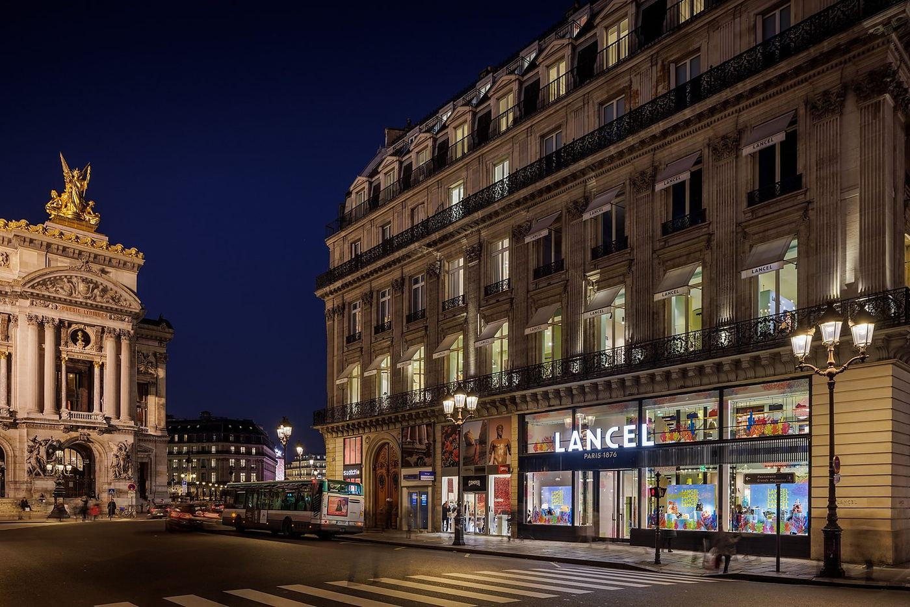

Service 03
Déploiement de concepts & ouvertures
Des plans architecturaux au jour de l'ouverture. Ouvertures, rénovations, déploiements et pop-ups, harmonisés sur tous les marchés.

Le périmètre
Le jour de l'ouverture est une deadline qui ne bouge pas.
- Rétroplanning. Le plan depuis la validation du concept jusqu'au jour J : qui fait quoi, pour quand, avec quel budget.
- Coordination des fournisseurs. Architectes, ateliers, installateurs et équipes locales briefés avec matériaux, spécifications techniques, niveaux de coût et tolérances, pour que le devis ressemble au plan.
- Un concept, tous les formats. Du flagship à la boutique de 30 m² : un dessin maître, des versions dimensionnées, et des kits avec notice pour que les boutiques installent sans fermer.
- Installation sur site. Une présence en boutique pendant les jours critiques, du montage aux briefings d'équipe, jusqu'à l'ouverture.
- Pop-ups et corners. Des concepts pour grands magasins et espaces éphémères, du brief à l'installation finale.
I
Planifier
Établissement du calendrier, du budget et de la matrice des responsabilités, validés en amont de chaque chantier.
II
Coordonner
Pilotage rigoureux des fournisseurs, des équipes et des installations, briefés et suivis à chaque étape jusqu'à la livraison.
III
Inaugurer
Une présence active sur site les derniers jours pour garantir une ouverture parfaite, à la hauteur de votre image.
D'où ça vient
Plus de cinquante ouvertures, rénovations et déploiements menés à travers l'Europe, la Chine, Dubaï et Moscou, complétés par des pop-ups d'exception aux Galeries Lafayette, au Printemps et chez Harrods.
Une date d'ouverture au calendrier ?
Plus la conversation démarre tôt, plus la dernière semaine sera calme. Apportez les plans, nous apportons la méthode.
Prendre rendez-vous